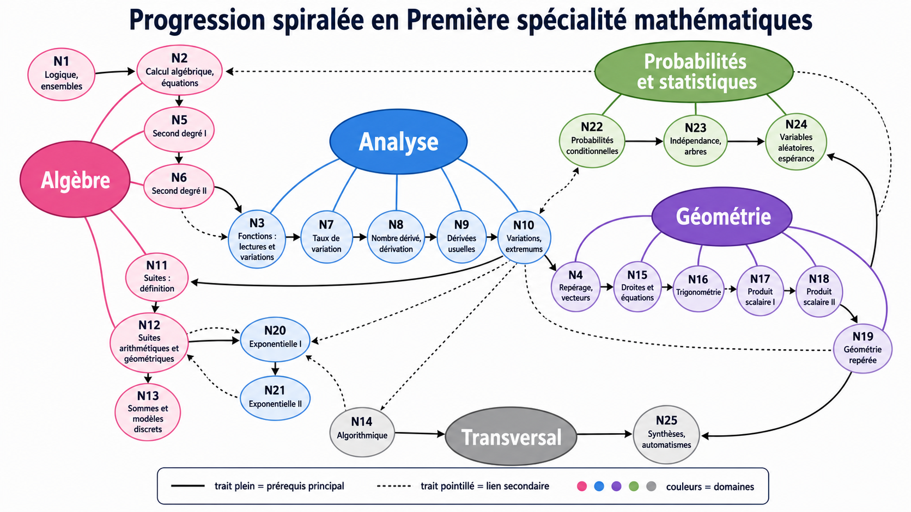

Progression visuelle
La carte ci-dessous montre les notions de Première spécialité mathématiques, regroupées par domaine, et leurs liens : prérequis en trait plein, liens secondaires en pointillé.
Progression calendaire
Ouvrir la progression calendaire (PDF)
Carte de progression
Cliquez sur une bulle pour ouvrir la page de la notion.

N01 – Logique, ensembles N02 – Calcul algébrique, équations N03 – Fonctions : lectures et variations N04 – Repérage, vecteurs N05 – Second degré I N06 – Second degré II N07 – Taux de variation N08 – Nombre dérivé, dérivation N09 – Dérivées usuelles N10 – Variations, extremums N11 – Suites : définition N12 – Suites arithmétiques et géométriques N13 – Sommes et modèles discrets N14 – Algorithmique N15 – Droites et équations N16 – Trigonométrie N17 – Produit scalaire I N18 – Produit scalaire II N19 – Géométrie repérée N20 – Exponentielle I N21 – Exponentielle II N22 – Probabilités conditionnelles N23 – Indépendance, arbres N24 – Variables aléatoires, espérance N25 – Synthèses, automatismes